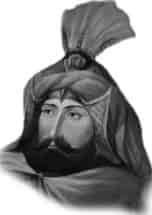

IV. MURAT
Babası : I. Ahmet
Annesi : Kösem Sultan
Vefatı : 9 Şubat 1640
Saltanatı : 1623 - 1640 (17 yıl)
IV. Murat İstanbul’da doğdu. İyi bir tahsil gördü. Çok kuvvetli bir vücuda sahipti. İki yüz okkalık gürzleri rahatça kaldırabiliyordu. En kuvvetli yaylar çeker, çok uzaklara cirit atardı. Attığı oklar ile kalkanları bile delebiliyordu.
Çok küçük yaşta padişah oldu. Bir müddet devlet işlerine bakamadı. Devrinde 1624 ve 1625 yıllarında Anadolu’ya iki sefer yapıldı. Celâli İsyanları bastırıldı. Çok değerli bir şair olan padişahın daha çocuk yaşta iken Bağdat’ı kuşatan ve padişahtan yardım isteyen sadrazama verdiği manzum cevap çok meşhurdur:
Hafıza Bağdat’a imdad etmeye er yok mu dur? Bizden istimdad edersin sende asker yok mudur?
Genç Osman zamanındakinin bir benzeri olan ayaklanmayı çok büyük bir ustalıkla bastırdı ve etkisiz hale getirdi. Çok etkili bir nutukla asilere bile kendi lehinde tezahürat yaptırdı. Sonradan da bu entrikaları çevirenleri birer ikişer yakalatıp idam ettirdi. 1633’de tütün yasağı koydu, 1634’de içkiyi yasakladı. Devlete bağlılığı olmayan herkesi idam ettirdi. Düzenlediği bir doğu seferinde Bağdat’ı fethetti ve 1638’de “Bağdat Fatihi” unvanını aldı.
İstanbul’da ve devletin her kesiminde bütün kabadayıları temizledi. Çok geniş bir haber alma teşkilâtı kurarak, imparatorluğun her tarafındaki zorbaları ismen tespit ettirdi ve sefere çıktığında geçtiği yerlerdekileri ismen çağırıp boyunlarını vurdurdu. Kâbe-i Muazzama’yı yeniden bina ettirdi. “Murati” ve “Şah Murat” mahlasıyla şiirler yazdı. Aynı zamanda büyük bir bestekârdı. Devlet işlerine tam hâkimdi. Her şeyden haberi olurdu. Seferlerinde askerle aynı şartlar içinde bulunur, uykusunu bile atının üzerinde yapardı. Tahta çıktığında devlet hazinesi bomboştu. Tahtı bıraktığında ise dopdolu idi. Üstün meziyetleri geniş tarih kitaplarında yeterince anlatılmaktadır. 1640 yılında hastalandı. Kendisinden ümidini kesti fakat iyi oldu. Sonra yeniden hasta düştü. 8 Şubat 1640’da yirmi sekiz yaşında iken vefat etti.
Erkek çocukları: Süleyman, Mehmet, Alâüddin, Ahmet.
Kız çocuklar: Safiye, Gevherhan, Kaya İsmihan, Zeynep, Rukiye.